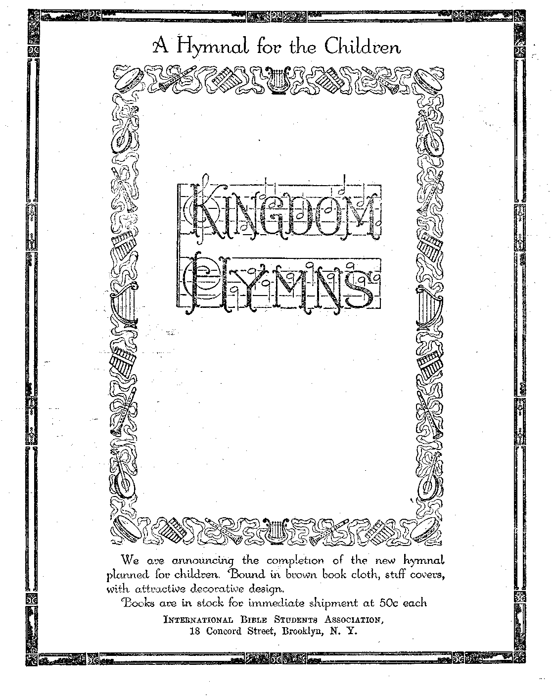

jwORLD DYING
DIGEST OF
WORLD’S NEWS
STUDY YOUR LIFE
INSURANCE
FOUNDATION
OF THE
TRUE CHURCH
s
VoL VII Bi-Weekly No. 166
January 27, 1926
a copy — $ 100 a Year Canada- and Foreign Couritries $ 1.50
NEw
VORLD (BEGINNING
' Labor and Economics
Digest or the World's News............. . , 268
, Why American Wages Are High........
Labor Savers Displace Labor ... . . . . . . ... .
Metropolitan Life’s Housing Investment .
Europe’s Poorly Paid Woodworkers . . .’ . . . . ... . . .
r Social and Educational
Increased State and Local Taxes
America Headed for a Caste System
A Sample Prison Labor Contract
Russia’s Child Criminal Problem ...
More About “Handling the kiddies” . . ..... . z. . . . 278
Another Bachelor Offers Parental Advice . .
Experiences of a Farm-Hand’s Wife
Finance—Commerce—Transportation
Study Your Life Insurance ............
The Loan Value of Insurance Policies......... .
■ Political—Domestic and Foreign
Miscellaneous Items About Italy
From Our Canadian Correspondent
i Britain Preparing for Anarchy . . . . '
' Agriculture and Husbandry '
Religion and Philosophy '
Faith Healing in Vancouver ............. . , 271
The Foundation of the True Church ........ ' ; . . 282
“The Gates of Hell” ............. ...
Studies in “The .Harp of God” . ...............
Published every other Wednesday at IS Concord Street, Brooklyn, N.Y., U.S.A., by WOODWORTH, HUDGIN'GS & MARTIN
Copartners and Proprietors Address: 18 Concord Street, Brooklpn, N. Y., U.S.A. CLAYTON J. WOODWORTH . . . Editor ROBERT J. MARTIN . Business Manages WM. F. HUDGINGS . . Sec’y and Treas.
Fivn Cents a Copy—$1.00 a Year Maks Remittances to THE GOLDEN AGE Fobbiun Orness: British.....34 Craven Terrace, Lancaster Gate, London W. 3
Canadian 38-40 Irwin Avenue, Toronto, Ontario
Australasian ....... 495 Collins Street, Melbourne, Australia South African ...... 0 Leila Street, Cape Town, South Africa
Entered ai second-ciaee matter at Brooklyn, N. Y., under the Act of March 3, 1878
Volume VII Brooklyn, N.Y., Wednesday, January 27, 1926 . Number 168
Study Your Life Insurance By M. E. Riemer
THE above heading is the title of one of Roger can think that they are really getting something W. Babson’s letters to his clients, the finan- for nothing; but in fact they are paying very
cial gods of this country. If this advice is financially profitable and beneficial to them, why will it not be proportionately so to all holders of life insurance policies ?
One writer has said: “There is nothing in which so much money is involved and upon which the welfare of so many people is dependent as life insurance.” So we will not argue its benefits which, I feel sure, are manifest on every side and to all of us.
Of all the institutions of this world is there any one that smacks more of sacrifice, love and self-denial on behalf of others than does pure protection life insurance? As originally planned life insurance was a pure protection measure in behalf of one’s dependents, the “left-behinds”. Of this kind of life insurance Mr. Babson says that it is “a form of applied religion, where a group of people unite and all contribute to help the unfortunate one”.
The predictions of the “housetop saints” of life insurance are that the time will come when insurance will return to this original form. This time will come when the debauch of investment insurance will have passed away and either when people will think or when law-makers appointed to protect them are forced to their duty.
UT noble as this institution was, selfishness has prostituted it; and the evil seed sown has brought forth its evil fruitage to all concerned. The statements, “What do I get out of it?” and “I do not want to put my money into anything that I have to die to beat”, have caused pure life insurance almost to disappear from the earth, or to so formulate itself that the golden straw could be drawn through the mouths of the greedy and selfish so that they dearly for the little they get or leave to their dependents. We refer to so-called investment insurance.
Why should such a necessary thing as the protection of one’s wife and children be tampered with by adding features which militate against the very purpose of life insurance, such as investment features, and which make this much-needed protection so costly that those w’ho need it most cannot take sufficient of it to really bring the needed protection to their families? Investment insurance is from 100 percent to 400 percent and 800 percent higher than pure protection life insurance. One has said of investment life insurance that “the more you pay for it the less of it you have”.
Why are not these investment features added to fire, automobile and liability insurance? Simply because the one paying the premium gets the protection. In life insurance the protection is for some one else; and to satisfy the selfishness of the individual paying but getting nothing, these investment features are added; and he pays dearly for them. If he gets the benefit of the investment, his beneficiaries lose the protection.
Under the caption of this article, and in heavy type, Mr. Babson states: “Clients, however, who have the self-control to save of their own accord need not purchase life insurance as an investment. Buy life insurance as protection, the same as you would buy fire insurance or automobile insurance, but think twice before buying it as an investment.” This last statement should be underlined, and we shall endeavor to substantiate it in what follows. ;
It is the purpose of this article to show the reader why investment insurance is so expensive, also to point out how he may, if he haa been led into this trap by high-pressure sales-
men with glib tongues, get back some of the hard-earned cash he Jias been .talked out of, which in some cases mounts up into the thousands of dollars, and still keep his dependents under as much insurance protection at less cost and oftentimes at no cost at all.
Since, for the most part, the readers of The Golden Age are of that class who are using what they are and have in behalf of their fellow men, we feel that at least a "part of this regained money will be -used to invite the golden age of blessing nearer, and hasten its advent to this poor groaning creation, -
DURING the year 1922, the total income of 260 life companies, as given by the official Insurance Year Book .was ^,137,294,355. During that year they paid out to policy holders only $1,006,931,734, thus leaving in their hands for the year 1922 alone, $1,130,362,621. Less than half of what the public paid was realized by them as benefits.
While all life insurance is 'assessment insurance, investment insurance is additionally an assessment upon a man's iestate at death, to pay his insurance money to, in some instances, as much as almost 100 percent of the face value of the policy. In other words, investment insurance is making your insurance company a joint participator with your left-behind dependents to the extent of, in some cases, as much as 50 percent. Again, it oftentimes robs the wife and orphans of all the insurance originally intended for them. Investment life insurance also makes the cost of insurance so high that the necessary amount cannot be carried upon one’s self to the loss of the widow and orphans.' We shall endeavor to prove this.
Investment insurance is any kind of life insurance other than pure protection, or straight life insurance. Any policy carrying cash surrender, or loan values is investment insurance. Under this heading come the endowment policies, in 10, 15, 20, 25, and 30 year terms; also the limited payment life insurance policies for the same year periods and ordinary life policies. These are practically the only policies written by the so-called old-line companies, with the exception of the term/policies and the yearly renewal step-rate policies.
fpO STUDY life insurance both as investment and as pure protection we will introduce them under the names of The Skinner Life Insurance Company and The Blesser Life Insurance Company. Under the Skinner Company will be represented all investment insurance companies; under the Blesser Company, a1’ straight or pure protection life insurance companies; and the rates used for each will be those of the most representative company in each class.
The Skinner Company has the following prices at which $1000 of life insurance is offered to a man thirty-five years of age:
v Annual Premium
Ten-Year Term $ 14.50
Fifteen-Year Endowment ' ' 69.52
Ten-Year Endowment 105.87
Foregoing we find $1000 of life insurance presented at eight different prices under term, whole life, limited-pay life, and endowment life insurance. Let us translate this into the cloth? ing business, letting a suit of clothes take the place of the $1000 life insurance, the prices at which it is offered indicating the kind of policy being illustrated.
After you have picked out the suit you want, the salesman offers you the following methods of payment:
If you take the suit in ten days the cost will be $14.50.
If you want twenty days in which to callfor it $16.24.
If you want to call and get it any time you please, then you must pay $28.11.
If you want to call for it any .time, and also desire the privilege of returning it before wearing it and receiving $20 in exchange for it, the price is $38.34.
If you want the suit and in addition want a chance on an overcoat of the same value, and in case you win .the overcoat you lose.the suit, then I must charge you $105.87.
What would you think of a firm offering a suit at such an array of prices, or of a shoe dealer having eight or ten prices for the same pair of shoes?
Let us suppose that eight men all thirty-five years of age, A, B, C, D, E, F, G, and H, should each take out one of these policies with the Skinner Company, for $1000; A taking a 10-year term policy, B a 20-year term policy, and so on down the list respectively to H, who took the 10-year endowment policy. And let us also suppose that they all died from a pestilence during the tenth year of their policy life. Each would leave behind just $1000 in insurance, regardless of how much each had paid, whether it was $14.50 per year or $105.87 per year. Let us note the various amounts each paid for $1000 of insurance: A $145.00; B $162.40; C $383.40; D 383.40; E 459.10; F 519.10; G $695.20; and H $1058.70. II would have paid in 58.70 more than he leaves in insurance.
Now, if the Skinner Company solicits insurance for $1000 for ten years at $14.50 per year, it must make money at that rate; and it does, for insurance would not be offered at that price unless it were not only self-sustaining but profitable. How much then does each of the other seven kinds of policies bring in to the plethoric purse of the Skinner Company?
Counting money worth 4 percent interest, , compounded annually (whereas the insurance companies make 6 percent and more on their investments), the sum each would donate over and above the $145.00 which A would pay in in ten years to the Skinner Company for the cost of his insurance, would be as follows:
A $145.00
B 145.00 plus $ 21.73 C 145.00 ” 45.08
D 145.00 ” 297.76
E 145.00 ” 392.31 :
F 145.00 ” 467.25
G 145.00 ” 687.20
H 145.00 ” 1141.21
" Now notice that the amounts in the righthand column are additional to the $145 at which A got his insurance. These ad.ded amounts, are, therefore, absolute donations to the company or, in other words, they represent assessments against the policy holder with which to pay his own insurance.
Note also that H, who carried an endowment policy, in his anxiety to get the $1000 himself instead of leaving it to his dependents, actually paid out $1,141.20 more than it would have cost him to leave $1000 to his beneficiary. In other words, had H taken a ten-year term policy at $14.50 per year, same as A, and then placed the difference between this and what he paid for an endowment policy into a savings bank giving him 4 percent interest compounded annually, his widow would have received at his death the full $1000 life insurance, and the bank account would have also netted her in the meantime $1,141.20, giving her in all $2,141.20; whereas the Skinner Company gave her $1000 on the endowment policy and has the $1,141.20 for itself.
Now what is true of II and the miserable unbusinesslike bargain he got in his endowment policy, is true of all holders of investment insurance policies; and that in proportion to tha amounts paid as premiums above what straight life insurance really costs per year. Fortunately these sums can be regained by a proper manipulation of one’s insurance, be the policies three or thirty years old, as I shall herein show.
ITT let us examine further into the “good” features of this investment insurance.
Let us note their loan values. We will suppose that D took the twenty-pay life policy at the age of twenty-five and has paid his 20th and last payment. He now feels like Jack Horner, commending his wisdom and prudence in making such a good investment. But unlike J ack, who took out a plum, D has just put in his last plum. D, now forty-five years of age, becomes hard pressed for money; he wants to buy an auto; and seeing that he has a $500 loan value in his insurance policy, he borrows this amount from the Skinner Company and pays 6 percent on the money, which is $30 per year. Like 90 percent of all policy holders who borrow upon a policy, D never paid back the money. Some three or four years later D, having suffered an auto accident, is brought home dead. After his burial his wife looks up his $1000 life insurance policy and finds that she can realize only $500 upon it, the other $500 having been borrowed by D three or four years previously.
All this time D had been paying $30.00 a year to maintain this $500 insurance upon his life. He could have merely accepted the $500 loan and let his insurance lapse; but to maintain the $500 insurance he, must pay $30 a year interest on it. At this rate D has been paying for insurance at the rate of $60 per $1000. When he started at the age of twenty-five he paid $31.80 per $1000; but now, after having finished his
Iasi payment (?) he must continue to pay and pay double; that is, he must pay $30 interest on $500, or at the rate of $60 per $1000. A fine investment this!
Let us suppose that after D had carried his policy for fifteen years he borrowed $340 on it, which was its loan value at that time. He must continue to pay $31.80 premium for $1000 insurance but has only 660 insurance actually. In addition thereto he must pay $20.40 interest on the $340 he has borrowed, making in all $52.20 per year for his $660 life insurance. At this rate he pays $80.00 for $1000 life insurance, whereas when starting he paid $31.80 per $1000. Note well how cheap (?) it gets the longer you have it! Truly, the more you pay the less you have.
“But,” says D, “my policy has a cash surrender value”; meaning that at any time after the third year he can surrender his policy and by cancelling his insurance accept a certain amount of cash instead. At the end of the 20th year* when it is paid up, he insists, it will have a cash value of $500. But let us see how much of a bargain this is. How comes this policy to have this cash surrender value in it? Answer:
Above the paying for $1000 of life insurance, or very nearly that, D has been paying enough in addition which at only 3 percent interest has matured an amount of $500 in twenty years. This is called a reserve, and is a feature of each investment life insurance policy. Now if D wants this amount at any time he loses all his insurance that he has been paying for. If he leaves this cash with the company and dies, his beneficiary gets only the insurance he has been paying for and the company appropriates to itself the reserve or the cash surrender value he has been accumulating, which at maturity is about 50 percent of the face value of the policy.
In.other words, when D dies he makes the insurance company a participator in his estate to the extent of the cash surrender value in his policy. When he paid his first premium his policy made to his beneficiary became his will to her; and as he (by paying excessive premiums) accumulated the cash value therein in addition to paying for his life insurance he was increasing the insurance company’s part therein, until at its maturity or at his death the policy vested the company with the full rights io this cash surrender value or reserve, thus making the company a joint participator in his will along with his left-behinds.
Now upon maturity D’s policy has $500 cash value and $500 insurance in it. He can get the $500 if he will consent to losing the $500 insurance. He must leave the $500 cash to keep the $500 insurance. To anyone, $500 is worth $30. per year, which is 6 percent interest on that amount. This $500 left with the company makes D pay $30 per year for his $500 insurance, or $60 a year per $1000. Of course there are some “dividends”, but these are not contracted for in the policy and so are not to be depended upon. We will treat the matter of dividends later; but in no case do the dividends make the investment a paying one to the insured.
ET us suppose that D at the age of twenty-five years had taken a policy with the Blesser
Company for $1000 straight life insurance. His annual premium would have been $12.55, instead of the Skinner Company’s assessment of $31.80—a saving of $19.25 per year. Instead of putting this $19.25 into the Skinner Insurance Company's funds he places it.in a savings account at 4 percent interest, compounded annually, and after twenty years finds he has $596 in the bank. 1
Now to get this money he simply asks his banker for it, and receives it; and his insurance is in no wise affected. He need not borrow it; for it is his own money. Hence there is no interest to pay. Having this $596 in his hands, he still has $1000 life insurance in the Blesser Company. Instead of paying the Skinner Company $30 for $500 insurance, he pays the Bless-er Company $12.55 for $1000 insurance, or about one-fifth of the Skinner Company’s rate. And instead of making the Skinner’ Company , a beneficiary in his insurance testament to the , extent of $500 (the cash value of his policy with them) thus robbing lais family of the amount, D leaves $1000 insurance for his widow with the Blesser Company, and $596 in his bank account, totaling $1596 to the widow instead of $1000 . as with the Skinner Company’s policy. -
If D with his policy in the Blesser Company places his $596 at 6 percent interest, which is very easily done, it nets him $35.76 per year. He then pays out of this sum $12.55 for his insurance and has $23.21 to add to his savings account, or to use as a good Golden Age reader would use it. Thus having taken out pure protection life insurance and taking charge of his own investment, he has insurance not only self-sustaining, hut has the cash value in his own name and control. Furthermore he receives as interest from his banker a nice additional sum of $23.21 each year, larger than any -o-called insurance dividend would ever be, which he can use as he pleases; and he is not required to pay 6 percent for the use of his own money as with the Skinner Company’s policy, but can get 6 percent on it himself.
If D takes out an investment policy on the 20-pay plan, he makes the Skinner Insurance Company his banker as well as his insurance custodian; and while the Skinner Company assumes both roles it cannot or will not fulfil both for him. He must choose between his insurance protection for Iris family on the one hand, and his cash value in his policy, on the other. To keep his insurance in force he must forfeit his cash, the Skinner Company acting as insurance custodian. To get his cash value he must lose his insurance, the Skinner Company acting as his banker. So it is plainly evident that both roles are impossible; for the Skinner Company while claiming to serve in both capacities, fulfils only one. If a banker appropriates . your investments to his own funds he would soon be serving time in Atlanta or Leavenworth; but an Insurance Company with its complicated investment scheme which takes advantage of legal technicalities, is perfectly immune. Would a sane person, understanding such a contract, enter therein?
When D keeps the insurance business and the investment business separate, by taking life insurance in the Blesser Company and placing his savings money with the banker, he or his beneficiary will receive full value of both the insurance and the investment, which is the logical and proper way to do.
ASH surrender and loan values attached to life insurance are a detriment to the very purpose which life insurance is intended to serve, viz., protection for the left-behind ones. Borrowing upon one’s insurance policy is called in insurance circles “Borrowing from the widow and orphans”. Statistics show that nine out of ten who thus borrow on their policy never pay the loan back. Since the widow's insurance money is minus the amount of the loan the husband has really borrowed from his widow- and never pays her back; and we all know that very seldom is a father over-insured, especially among the common people.
Cash surrender values are more tempting the larger they become; and when an automobile fever or an oil fever or some other investment craze takes hold of a man he -will usually sacrifice his insurance to get the cash surrender value out of his policy. How many times has a widow found, to her sorrow and to the loss of her children in educational necessities, that the expected insurance money was either entirely gone or greatly reduced through the husband’s having made use of these good (?) investment features in his policy I
If a man cannot care for his family out of his salary and must therefore use up some of his insurance policy value in a loan, how can he expect his -widow to make a go of it when his salary stops entirely at his death and his insurance is minus the loan he made on it and did not pay back? These investment features only tend to thwart the real purpose and blessing that pure-life insurance was intended to bring. How many widows have wished that their husbands’ insurance policies had had no loan nor surrender values attached!
For one to get the best of the Skinner insurance Company’s policy contract he must do the impossible—he must die to leave his insurance money to his family, and he must live to keep the insurance company from appropriating his cash accumulations to their own funds. Since he cannot do both, he is bound to lose one or the other. Why enter into a contract where you are bound to lose, which is the case in every investment life insurance policy?
The cash surrender value of a policy varies in proportion to the age of entry, the land of policy, and the number of years in force. The ordinary or whole life policies have the lowest cash value, the limited-pay life policies coming next, and the endowment policies having the largest cash value. These cash values are simply accumulations of what you have paid above what pure protection life insurance would have cost you.
I have before me a list of the fifty-five largest companies in the United States, and opposite
w s n. QOLDEN AQE *am'"
each company Is amount of the total cash surrender values of the policies they had in force during 1923. These amounts are really appalling. One company holds more than one and one-quarter billion dollars which really belong to the people and which are subject to their demand at any time they awaken to their privilege or need of it. If this is not withdrawn by the people it will be need, instead of the company’s funds, to pay their insurance policies at death. Many of these companies quote these investment figures to show how financially strong they are. But these investments do not belong to the companies and= therefore do not represent an item of strength hut rather the reverse. They represent a weak spot in these companies, which may yet prove to be their undoing in this dawn of that terrible day.
Golden Age readers know what to expect in the not distant future, in respect to the overthrow of present institutions in a great time of trouble. Let us suppose that a real financial calamity or panic should visit this country, which -is not unlikely. Then suppose the securities in which a great insurance company has invested $1,250,000,000 of the people’s money would immediately shrink to a fraction of their par value. After this financial stringency has been on the people a short time their ready cash would become exhausted. Then they would look up their insurance policies and realize what they have of cash value in them, and would make a simultaneous demand upon the companies for these sums.
How could these companies pay these sums, with securities dropped to say 50 percent of normal? Their inability to turn their securities into cash to pay back the investments of their policy holders would render the companies insolvent ; and the policy holders would lose not only their cash values but their insurance as ■Well. So a company doing otherwise a normal insurance business may be bankrupted over night by its investment business. Greed, having changed insurance, originally a benevolent institution, into a selfish banking business, may bring its own destruction upon itself as well as a loss to the greedy demanders of investment insurance yho cry, What do I get out of it? "So are the ways of everyone that is greedy of gain; which take th away the. life of the owners thereof'.’’—Proverbs 1:19.
There are about 260 life insurance companies in the United States. ’Hie fifty-five largest ones hold in the way of cash surrender values on policies over $8,000,000,000 of the people’s money, which is almost t wice-as much money as there is currency in circulation in our country. How much all the 260 companies hold would be interesting information. >
Since these’cash surrender values are accruea from big charges for life insurance in addition to the real cost of insurance, they plainly appear as assessments of the individuals to pay their own insurance; and yet these very companies cry down assessment insurance, when in fact all insurance is assessment. Since the so-called dividend money is larger or smaller according to the increased or lessened expenses of the companies, it is plainly evident that they assess the people yearly, as well as in a lump sum with a vengeance when the policy holder’s cash value is seized upon at his. death to make up his insurance money for his beneficiary. While doubly andgrossly assessing their clients, they have the audacity to cry down "assessment” insurance!
IN THE article referred to foregoing, Mr.
Babson cites the following illustration of what it meant to one man to study his life insurance. The case was that of a man fortyeight years of age, who had just completed his last payment on a $10,000 life insurance policy on the 20-pay plan. He was pleased to think that he had finished his installments and had such a good bargain. But Mr. Babson called to his attention the fact that he had a cash surrender value of $5,340 in his policy, and that by taking the cash and surrendering his policy he could place this $5,340 out on 6 percent interest, which would net him $320 per year; and that he could then take out $10,000 in pure protection life insurance for only $317 per year, leaving him $3 to the good. Then should he die, he would leave $15,340 behind, instead of $10,000, and thus increase his estate $5,340, or more than 50 percent of what his insurance was, and at not one single cent cost to himself. The "dividends” which he would lose in the transaction, Mr. Babson showed would be a negligible quantity. Mr. Babson also laid stress on the matter of getting his new policy before sur-
Tendering the old, to Be sure he could pass the physical examination.
In proportion to the age of entry, the kind of policy, and the length of time in force, all so-called investment insurance policies have these cash surrender values, with the exception of term policies. And amounts of cash proportionate to that in the case cited by Mr. Babson are possible from all such policies. But one should make sure that he can stand the physical examination to get a new life policy of pure protection insurance before cancelling his Skinner policy.
“But,” someone will say, “insurance companies cannot carry on -without the funds represented in cash surrender values.” To prove to the contrary, let me cite the case of the insurance company whose rates for life insurance are given under the name of the Blesser Life Insurance Company. This company charges $12.55 for $1,030 life insurance as its yearly premium for age twenty-five. Where the Skinner Company charges $28.11 for ordinary life insurance per year at age thirty-five, the Blesser Company charges $17.68; yet the Blesser Company ranks second in safety of all the fifty-five largest insurance companies in the United States. By this is meant that there is only one company that has more money per $1,000 of insurance in force with which to pay risks than the Blesser Company. The company whose rates are used under the name of the Skinner Company, has a little more than one-half as much money with which to pay death claims per $1,000 of insurance in force as the Blesser Company has, though its rates are almost double that of the Blesser Company. Manifestly the Skinner Company’s excessive premium income goes to pay extravagant “expenses”, huge salaries to officials, etc.
O ILLUSTRATE how rate-making is done and also to show how insurance companies can make a “go of it” and also a profit on such reasonable rates as real life insurance protection costs, we will explain that the American Mortality Table shows how many people out of each age will die each year per 1000 individuals. At thirty-five years of age 8.95 people out of each 1000 will die at that age. Now if the 1000 each pay only $8.95 per year per $1000 there will be $8,950 ; and thus $1000 insurance can be paid for each death, out of the premiums on 1000 policies issued at this rate. Each additional 1000 policies would net the company a profit of $8950 in premiums annually.
Similarly at age of forty-five there will be 11.16 deaths in a thousand, making the rate $11.16 per 1000 of insurance. At the age of fifty, there will be 13.78 deaths per 1000, making the premium $13.78 per $1000 of insurance.
Now to give a flat rate that does not increase, a mean or average rate is made of all the rates; and this is the level mortuary premium. Thus we see that at the lower ages more must be paid than is due according to the natural death rate, and that those who take out insurance young and do not live to a ripe old age have paid the insurance company too much money.
Now to this natural premium all insurance companies add an amount to take care of the expense of keeping the insurance in force, and thus a pure protection insurance premium is arrived at. But the investment insurance companies of the Skinner type add a reserve premium to this, which makes up the loan and cash surrender values; and on top of this so-called “safety money” is still added a premium from which the so-called dividends are paid to the lucky (?) investor. (But more of this dividend business later.) This entire amount makes the big fat premium of the investment policy.
Since, as pointed out above, the giving of a level premium throughout life makes all who do not attain a good old age pay more than they should, we can see one fruitful source of income or profit. Furthermore, insurance examinations keep out the poor list; and only healthy, sound people get insurance. Hence very few insurance companies have a death rate as high as fifty percent of what the premium will allow, called the expected death rate. Here we see where more of their money comes from.
Science, hygiene and dietetics have lengthened the span of life beyond what was common when this mortality table was figured, which was some sixty years ago. Again the large amount of lapses adds to their funds. Out of 1000 taking but life insurance 577 drop their policies before death, leaving only 423 death claims to pay out of each 1000 policies issued. All these factors tend to make premiums in mutual pure protection companies low compared with resuits received; but they seem to have no effect upon investment insurance.
In taking out life insurance as pure protection, which is the cheapest and best, see that the policy has neither cash surrender nor loan values. Term insurance has lower premiums; but since we know not how long it may be needed, it is not best to take this form. If the proper company is found one can get a whole life or ordinary life policy for about what a twenty year term policy will cost, and the premium will be sufficiently low that it will not ■work a hardship upon anyone.
In a pure protection life insurance company of the Blesser type there is only one rate for insurance no matter what kind of insurance you take, be it an ordinary life, a 20-pay life, or an endowment Life policy. Any money put into a protection life policy, above the regular life rate, is not forfeited to the company but at the time of death is added to the face of policy with 4 percent interest compounded annually. Or it will be given to you at any time upon demand, with interest; and in no wise is your insurance affected, this being maintained at the regular insurance rate.
NOW with reference to the dividends let me add a word of explanation. Almost all of us have had experience with dividends and know by actual experience what they have amounted to in the past; but no company will place in their contract or policy a specified amount promised for the future. Dividends are not to be depended upon. They fluctuate; and during the late war, it is said, they disappeared in some instances entirely.
The word dividend as used in connection with an insurance policy is absolutely a misnomer; so much so that some states have ruled against the use of this name and require that they be rightfully named refunds. The name dividend is chosen artfully so that the unsophisticated can be made to believe that they have an investment in their life insurance policy; and such get a real “kick” out of their investment^), so complete has the deception been made. The fact is, these “dividends” are nothing but the returning of overcharges—the pulling of a sweetened straw through the policy holders’ mouths. People say that if they sell investment insurance there must be dividends, too. Both terms are misnomers and delusive. Since all insurance is in reality assessment insurance^ the dividend scheme has been invented to blindfold the people so they can be assessed yearly for their insurance w’ithout knowing it, being made to think that they have a dividend-paying investment. To realize how successful these companies have been one needs only to listen to the dividend talk indulged in and note the large amount of investment insurance that is sold yearly.
In every life insurance premium there is, in addition to the other items referred to above, an amount for expense, for maintaining the policy in effect, called expense money. But not desiring to confine themselves to this stipulated amount, and fearing the cost of life insurance may advance sometime through unforeseen circumstances arising, the so-called investment insurance companies have added another amount from which the so-called dividends are paid, called in the inner circle “safety money”. It is from this so-called safety money that the excessive expenditures, above the stipulated expense money in the premium, are paid. As this expenditure increases the so-called dividends decrease, and vice versa.
To show how thrifty these companies are in spending money, 202 life insurance companies, in 1923, exceeded their expense allowance in their premiums by the sum of $58,461,026. In 1924, there were 210 companies that exceeded their expense allowance by $75,416,021. Policy holders had to pay for this prodigality. If the companies would have held their expenses down to their allowances in 1924, a total of $75,416,021 more would have had be to handed back to the people as refunds, as required by law, from premium overcharges, called by the high-sounding name of dividends.
This “safety money” acts as a sort of buffer between the policy holder and the company, by which the companies can give full rein to their marvelous' spending powers, and through which they can keep the policy holder believing he has a dividend-paying investment. The president of a western life insurance company in addressing his agents said:
Dividends can be paid only because the premiums collected were too high, it is in no sense a profit. To get dividends one must literally buy them, the increased premium paid being the price. Dividends are merely the return of that part of the premium in excess of the amount necessary for the company to pay all its expenses and losses and to set aside the .required reserve.
How wonderful all this is! Just take note: You pay all the expenses; you pay the losses (that is, your own insurance) and also your cash surrender and loan values. You get one of these and then get the thrill of thinking that what is left, if any, is a “dividend”; that is, if you do not know any better. Cannot a person with only half an eye see that this is purely an assessment arrangement, the price of insurance varying as the dividends fluctuate?
In event that unforeseen circumstances such as famine, pestilences, wars, etc., should force the cost of insurance up, the so-called dividends would go down; and when these dividends would reach the zero mark, no more money being available from the policy holder, the company would be bankrupt and the insurance would be lost; whereas if the so-called level premium, which is anything but what its name implies, did not limit the assessment, a little more may tide over a crisis and save all for the policy holder and later possibly return to normal.
Whenever spendthrift organizations, such as the investment insurance companies have proven themselves to be, are given an amount such as the “safety money”, throughout all the lengths and breadths of which they may let their prodigality meander at will without fear of legal restraint, you can bet your last dollar that expenses will not be held down to anything like the minimum; and statistics bear out this fact.
One insurance paper, which incidentally has ceased to exist, doubtless due to its unappreciated activities in showing up existing conditions, tabulated the expenditures of the leading insurance companies and showed how much each company expended to keep $1000 of insurance in force per year. The company whose rates are quoted above under the name of the Blesser Company ranked first of all the companies in economy, spending $2.85 per year to keep $1000 of insurance in force. This company makes no premium charge for more than its economical expenditures, and consequently pays no dividends. It limits itself to its allowances. It has a true level premium. Among the other companies the expense to keep $1000 of insurance in. force per year runs as high as $15.31. So one can see for how little insurance can be maintained, and also how much can be spent to maintain it if sufficient latitude is given in the “safety money”.
In a late issue of The Literary. Digest and also in the Pictorial IlevLiv there appeared a full-page advertisement of an insurance company calling itself the largest, in which the entire page. was used to advertise investments; while its supposed business of life insurance was never once touched upon. The 'words Life Insurance appeared only when the company name was used. How many other publications were used for this ad is not known, but the amounts expended for these two pages are indeed no widow’s mite.
Public utilities, state and national, exist to investigate and regulate public serving institutions and their charges. But the largest and most universal servant of the people, -the insurance business, goes uninvestigated and unregulated. Probably some of this “safety money” that is not returned as so-called dividends is used to make and keep the companies sale from investigation and regulation. Bills correcting these evils and providing for-the cash value in a policy, being paid together with the insurance money to the beneficiary, have been introduced into some state legislatures; but needless to say, they all died in committee. The insurance lobby is a powerful institution, having the total amount of “safety money” behind it.
As long as the people can be made to believe that a forefeiture of their cash to the insurance company is investment and that the refund of a portion of the gross overcharge, after extravagant expenditures out of it have been made, is a dividend, just so long 'will investment insurance be sold. Barnum was right.
Should one desire, to regain his invested (?) money he should heed the foregoing advice which Mr. Babson gave; that is, “if he can stand the physical examination” for taking out the pure protection policy. Do not cancel any insurance policy until you have your new policy in hand. Take out insurance in a company paying no “dividends”, having no loan value, or any cash surrender value whatsoever, attached to their policies. With these expensive features eliminated you will get pure protection life insurance at reasonable rates. If you must have a limited-pay policy, see that you get the kind of
288 n* QOLDEN AQE BEOOKI'rN'N- *
policy in which your cash accumulation is yours on demand without forfeiture of your insurance, and without interest; also that in case of death this accumulation is added to the face value of the policy, and not made a part of it. Ask for a blank policy to read and study, before taking the insurance.
We are glad that soon life insurance will be unnecessary, being replaced by perpetual Hfe assurance. Jesus said: “This is life eternal [assured life], that they might know thee, the only true God, and Jesus Christ, whom thou hast sent.” (John 17:3) It will fully assure the policy holders against accident and disease, and the premium will be a consecration of one’s all to the President of that assurance company, Jehovah; Jesus being the General Manager as well as the Medical Examiner.
Senator Bokah, Chairman of the Foreign Relations Committee, is reported as favoring the scrapping of submarines, a suggestion recently made by several British statesmen; but 7he would add to this agreement among the nations the definite declaration that war itself is : a crime. It is a good thing for Mr. Borah that he is living in 1925, not in 1918; for in those days anybody who voiced such sentiments was in a fair way to get a free one-way ride to Atlanta.
THE National Industrial Conference Board, Inc., calls attention to the fact that while federal taxes have come down so that they are forty percent less than in 1919, yet state and local taxes have gone steadily up without a hitch, from 1890 to the present time, until now state governments take eleven times as much money from the American people as they did in 1890, and other district authorities such as cities, etc., require nine times as much to pay their bills.
IN AN address in Worcester Owen D. Young, of the General Electric Company, pointed out that the reason why wages are high in America is that the 29,000,000 horsepower in America’s factories do the work of 290,000,000 workers. In order to maintain high wage levels
Mr. Young advocates putting more and more after their feathers become oil soaked. The fish, power back of each worker, and thus making too, are damaged; and their location in the him more and more a manager of median- waters cannot be so readily determined, as the
ical labor than a mere laborer .
TTEMS appear in the press more and more frequently of late which show that the truth is being gradually driven home that labor-saving machinery actually does in fact displace labor. An item is now going the rounds that on American farms if only the tool power of 1850 were available it would be necessary to employ nineteen million more men. Just now Union Labor is taking a particular interest in the question as to how the benefits which accrue from the displacement of labor by machinery are to be divided between the machinery owners and the workers.
RAILROADS in the Northwest are frightened, and properly so, by the inroads which the motor trucks and busses are making in their business.. Railroad managers are openly pleading with their employes to urge that these vehicles pay an adequate tax. The concluding paragraph of one of these appeals says: “Let us protect ourselves our homes and our jobs against this peril, tlpit like the boa constrictor of the jungles, is sloyly but surely crushing the life out of the railroads on which we work.”
THE general and increasing use of oil for ship propulsion has its disadvantages as well as its good points. It causes the death of many gulls, which find themselves unable to fly gulls are a guide to their whereabouts.
rpiIE New York Trust Company points out that the gain in American oil production for 1925 over that of 1924 was largely caused by developments in Arkansas. It is declared that a third producing sand has "been discovered in Arkansas beneath the two upper strata from which oil has hitherto been taken, and that oil can perhaps be obtained at any depth to which the drill can penetrate.
CALIFORNIA has begun the work of reforestation, and expects that in one hundred years the new redwoods now being planted will be fit to cut, at just the time they will be needed. Two years ago a start was made, when 800 acres -were reforested; a year later 3,000 acres were planted; this year the reforestation of 6,000 acres is being undertaken.
IOWA had the banner crop of her history this past season. The average yield was forty-three bushels to the acre. The federal'•statistician who figured out what this means tells us that if the total crop of Iowa’s ear corn were put into a crib eight feet wide and twelve feet high the crib would reach from Washington, D. C., to San Francisco.
ACCORDING to the Department of Agriculture the year 1925 was an exceptionally troublesome one from the standpoint of insect pests. These pests seemed to be in greater numbers and more widely scattered than hitherto. Among the pests that had an unusually wide distribution were grasshoppers, chinch bugs corn earworms, apple maggots and beet webworms. '
AT AN address in Buffalo, Bishop Thirkfield of Chattanooga, Tennessee, is said to have declared that the United States is beastly rich and is turning toward the path down which Rome staggered to her doom. He declared that “the effect of our wealth on morals is inevitable, and we see it in increasing softness, luxury, lawlessness and corruption”.
THE president of Colgate University is quoted as saying that if present hopes and expectations are realized they will result in a caste system in America as rigid as that of India, on the basis that the intelligent quotient of a-child rarely changes and that it will be possible to determine beforehand what shall be his future occupation and hence his training for it. Colgate University was founded by a penniless lad whose one equipment when he came to New York was that he knew how to make soap. If soap making had been his highest possible position in life he would have left his fortune for no other purpose and we would now have no Colgate University and thus no chance to get our caste system started. This would have left the president of Colgate University out of luck. Not having any job as a caste starter he might have had to take a job making eastile soap; and unless he knew how to make good soap and plenty of it it is doubtful whether he would ever have gotten out of the soap business into the education game. Perhaps this would have made the caste system seem much less desirable.
BRYN MAWR College has given way to the present-day attitude that women may smoke, as Well as the men, if they wish to do so. The college has formally withdrawn its objection to women smoking, and has set aside one room in each building where those may indulge who wish. It is said that about half the young women there have already contracted the habit. In some theatres in New York the women now share with the men the smoking rooms designed only for the men.
THE Metropolitan Life Insurance Company, in the effort to provide good homes for New York and Brooklyn people of moderate means who cannot pay the high rents demanded by many landlord’s, has now some seven million dollars invested in apartments in the Borough of Queens, providing homes for 2,125 families at a monthly rental of $9 per month per room. The city is being urged to use its credit to provide homes of this class and of this rental for those who need them.
THE people are getting more and more careless about fires. The first half of 1925 showed an increase in fire losses of ten percent over the same period of 1924. The loss in money in these fires is about $400,000,000 per year. That is bad enough. But more serious still is the annual toll of fifteen thousand lives. New York City’s annual fire record is one fire to every 266 persons in the city.
BROOKLYN has one immense fire trap a mile square. Within this section there is but one brick building, a schoolhouse; and all the other buildings are of wood, separated by alternate spaces of three and six feet. In the rear of these houses are garages of the same construction. All that is needed is a good start for a fire, with the wind just right; and Brooklyn may lay claim any day to having one of the greatest conflagrations in history.
IT SEEMS that hashish is a certain kind of dope that is sometimes put into women’s cigarettes, the objective being to make them dope fiends so that when they try to give up the use of tobacco they will not be able to do so. Great was the surprise, therefore, of members of the city’s narcotic squad to learn that within the confines of Greater New York was until recently a hashish field as large as six city blocks. It is believed to have been planted by accident.
WITHOUT knowing what they were doing, a father and a mother in Tenth Avenue, New York, taught their three-year-old child to kill his father. They laughed repeatedly as he aimed a toy pistol at his father and exploded toy caps. Then he got his father’s revolver, mined and fired as before; and his father fell with a bullet so near his heart that he died an hour later.
T) ROBABLY the American candy man who •*- advertised that in 1924 the American people ate two billion pounds of candy may have stretched matters a little, but health statistics are enough to suggest that they ate too much. Too much candy is bad for the teeth, bad for the stomach and intestines, bad for the kidneys and for the skin. Many health advocates refuse to touch it.
A CCORDING to Alfred W. McCann, the great dietician, if you want to dodge tuberculosis eat v'hole grain bread, whole grain cereals, natural brown rice, whole oatmeal, honey, fresh unskimmed milk, plenty of butter, fruit and green salads and vegetables with all their juices. Once a day there may be a moderate consumption of eggs, meat, fish, fowl or cheese, but never any fried food, pastry, white flour, polished rice, farina, cornflakes, refined cornmeal or other denatured breakfast foods.
DEATHS at railroad crossings continue.
New York state reports about one a day. Every cement highway adds to the traffic problems of the country at well as the city. It encourages additions to our already overburdened highways of more vehicles which rival locomotives in speed. The better the highways the higher the speeds, and the greater the number of accidents per mile.
LOCOMOTIVES, like musicians and other artists, are temperamental, so it seems.
During the first few hundred miles of their lives it is not safe to have them travel more than twenty miles an hour. This accounts for the fact that a solid train of new locomotives from Philadelphia to Havana, Cuba, took about fifteen days to make the trip.
THE former head of the Rock Island railway system has figured out that the farmer receives for his cabbages about one-fourth of the amount paid by the consumer, less than one-third for his tomatoes, and in the case of watermelons less than one-eighth. A large part of the population of our cities live from off the differences; for produce of this nature passes through many hands before it reaches its final destination, and all must take their toll
NEW ENGLAND is frankly worried because so many of her industries have slipped and are still slipping to the South and the West. A reason given for this, at a recent conference of New England’s most prominent business men, is that too many industries have been governed by tradition and fixed policies and by absentee directors, rather than by live men who keep in daily and constant touch with the needs of the public.
THE contract between the state of Oklahoma and the largest prison labor contracting corporation in the world provides that the state of Oklahoma shall establish a plant for the manufacture of work shirts and women’s house dresses, provide suitable heat, light, ventilation, storage, cutting tables and. benches, keep the inmates well fed, housed, clothed and disciplined, transport all materials to and from the railroad station, after which, the contractor agrees to pay only fifty to sixty cents per dozen for making garments -such as other manufacturers must pay $2.60 to $2.90 per dozen to have made in their own shops outside the prison.
FUR. farming has becoming one of the staple industries of the United States and Alaska.
The Department of Agriculture asserts that there are now two thousand fur farmers in these areas, with a total investment in the business of some fifteen to eighteen million dollars. Most of these fur farmers are raising silver and blue foxes.
THE President of the Seamen’s Union declares that much of the smuggling of aliens into the United States is done by ships carrying crews made up, in large part, of immigrants disguised as sailors. On arrival in America these desert the ships in which they arrive and are lost to view. A favorite trick of the old Chinese who wish to return home is to arrange for one of these bogus Chinese sailors to take his place here. $1,000 bonus is paid to effect these entries.
TN CELEBRATION of a football victory the students of Northwestern University burned an unoccupied house, stunned the mayor of the city of Evanston with a blow on the head, broke two ribs of a policeman, damaged a quantity of fire hose, and were barely dissuaded from setting fire to the stands of their athletic field. All this is supposed to be manly and noble.
THE New York Times reports that experiments in the operating of tugs in New York harbor by means of radio control show a saving of about $500 per month per tug. Tows can be augmented after they are started, boats can be dropped if the shipper changes his order, and the tug is at all times in instant communication with the office.
THE Scientific Monthly for December contains an article which mentions that in the Smithsonian Institution at Washington, D. C., they have the Lord’s Prayer micro-engraved to such small dimensions that it is shown inside the eye of a common sewing needle. The Bureau of Standards has micro-engravings so small that it would take 220,000,000 letters to cover one square inch of writing surface.
OFF the western end of Cuba the navy aircraft tender Patoka recently encountered at sea a phosphorescent band of light about six miles wide, extending north and south as far as the eye could see. The night was dark and clear, but the light from the phosphorescent waves was so good that a newspaper could be read on the open deck. The light was doubtless caused by an unusual aggregation of billions of luciferin, the tiny sea creatures whose production of cold light is the wonder and despair of scientists. Perhaps they were having a convention.
Faith Healing in Vancouver
A FEW years ago Vancouver went into ecstasies over faith healing. A careful investigation of 278 supposedly cured persons reveals the fact that only 5 seemed to be improved, 212 showed no improvement, 22 were . aistinctly worse, and 39 had died. Vancouver ! is recovering sanity.
THE Federal Council of Churches is going in for motion pictures. Out of 800 reels of re-t ligious or semi-religious subjects, eleven were I selected and tried out in various Protestant church buildings in the vicinity of New York, with some increase in attendance resulting. In 1914 Pastor Russell’s Photo Drama of Creation, consisting of about the same number of reels and some five hundred slides, accompanied by ninety-six pithy lectures on the subjects shown, was presented free of charge to about twelve million people.
FOR some time scientists have been predict-ing that this winter would be a severe one, that next summer would be a cold one, and the following summer would have almost no hot weather at all. This is based upon a study of the weather following certain sun spot phenomena. These predictions seem further confirmed by the fact that Alaskan volcanoes are now more active than in twenty-five years past, and It is known that it takes about two years for volcanic dust to leave the air. This dust, while in suspension, acts as a vail to cut off light and heat from the sun.
ON THE continent of Europe the woodworkers are said to receive an average wage of about twenty cents an hour, calculated on the basis of American money. In England the conditions are better. The wages are about twice as high; but work is scarce, so that the net result is the same. In the United States work is plentiful, and wages are about six times what they are on the continent. .
THE storms which beset the Atlantic in winter came unusually early this year and with almost unprecedented ferocity. In the English Channel the gales at times reached ninety miles an hour. The “Berengaria” ran into a storm which injured twenty-six of her passengers, and for three hours tossed the big ship about so savagely that the loss in crockery and other broken items was estimated at about ten thousand dollars. A porthole window more than three inches thick was smashed to atoms by the waves.
Britain Preparing for Anarchy
0 HIVERING at every mention or thought of Russia, the British nobility are organizing for the fight which they think may come next spring. They have enrolled thousands of volunteers who will see to it that in an emergency supplies are maintained. It is even said that 150,000 British Fascisti, equipped as in Italy with black shirts, are ready for the fray. The British Home Secretary has formally sanctioned the formation of the Organization for the Maintenance of Supplies, or the O. M. S., as it is called for short.
fT^HE British have done something new in the world of aviation. At Pulham, England, when four thousand feet in the air, a baby airplane was released from the under side of a larger plane, and after diving 700 feet down returned to the mother plane and rehooked. The attempt was not a complete success because in rehooking to the mother plane a wire on the baby plane tore the mother’s propeller to pieces, and the two planes were compelled again to disengage and come at once to earth. No lives were sacrificed in the experiment.
THE New York Herald-Tribune contains an interesting account of the Swedish government’s air ambulance service. Sparsely settled districts north of the arctic circle are reached with this service. Ori receipt of telephone messages, the airplane speeds to the distant settlement and brings the sick person in to the base hospital. In practice the plan works well.
THE difficulty of holding his position entirely by the use of force, together with the fact that Italy has no outlet for her surplus population, is gradually forcing Mussolini toward a war. In a catechism for Fascists, put out with his approval, Italy is putting forth claims for territory now held by France, Britain, Switzerland and Austria. Having dominated their own country so completely, the followers of Mussolini may try it abroad and really start something. It would be interesting, for instance, to see what would happen if some wild Fascists should try to seize Malta, as the Mussolini catechism seems to suggest would be the proper thing to do. It would be quickly apparent that the British lion is a very real animal.
Was Mussolini Plot a Frame-up?
THE Slavs declare that the alleged plot on Mussolini’s life, from which Mussolini escaped, and for which the pope gave thanks and arranged Te Deums throughout Italy, was not a plot at all, but a deliberate frame-up by Mussolini, intended to get himself looked upon as a hero in the eyes of the people. It would fit in well with the Matteoti murder, the specially made lace uniform and some other things of Mussolini design. At any rate, the Jugoslavs are infuriated at the charge that they had anything to do with it, and have retaliated by mobbing Italians generally throughout the country, burning Italian flags and doing other provoca-five acts, for which they subsequently apologized.
Easy Terms to Italy
IN THE terms agreed upon whereby Italy is to pay her debt to the United States, the average rate of interest to be paid by the Italian government over a period of fifty-seven years is nine-tenths of one percent. In the case of Great Britain, the average rate of interest over za period of sixty-two years is about three and three-eighths percent. The difference in terms represents Britain’s greater ability to pay. Italian citizens in America are much pleased with the settlement effected.
THE London Daily News publishes an account of Fascist outrages at Leghorn, Italy, as seen by an eye witness. At ten-thirty at night twenty Fascist! entered the law offices of two lawyers known to be Masons. Every window was smashed; and every article in the rooms, to the last book and chair, was thrown into the street, and the whole was burned. Meantime the police of the city stood by and made not a move to interfere with this exhibition of the grand and glorious principles of Fascism©.
T) remier Mussolini gravitates more and more toward complete domination of even the thoughts of the Italian people by constantly recurring and ever more severe expressions of brutality, and then he says complacently; “Throughout the world there is a feeling that the parliamentary system was good in the past, but today it is insufficient for the needs and passions of modern society.” In other words, what society needs is more Mussolinis. But does it?
BY AGREEMENT with the League of Nations Germany has done away with its General Staff, abolished all military titles, will destroy all the big guns remaining at the fortress of Konigsberg, and will hereafter prevent the military training of the youth of Germany. Now why does France not do some of these things and give an anxious world a rest?
ONE by one the old war lies are coming forth to the light of day and being disowned.
Now it is proved that no German war order ever referred to the British army in Belgium as “General French’s Contemptible Little Army”. The German newspapers of the time made no mention of it, the Kaiser has denied that he ever made such a statement, and now historians have demonstrated that at the time the supposed statement was made the Germans did not even know the British had begun landing their troops. British papers now admit that this was purely another piece of war propaganda to arouse “patriotism”.
IT HEARTENS one to learn that the nobility of Europe are gradually getting down to business and doing something to earn their keep. One of the Hapsburgs is selling automobile tires; another is working as mechanician in a garage; another has a job carrying films from one movie house to another. One of the girls is giving music lessons. Probably by this time several of these have learned that they are happier at thus earning their own living than they were when sitting around doing nothing except feed at the public crib.
THE Ex-kaiser of Germany is said to be greatly impressed with the press dispatches which have reached him that two hundred thousand men in the pay of the Russian government, armed and equipped by the Japanese government, are held in readiness for use in China in case any emergency with one of the western nations should call for their use. The Kaiser thinks that Russia will labor tooth and nail to bolshevize China and, that end having been accomplished, that the combined hordes of the East will overrun Europe and blot out its hated civilization. He claims, moreover, that Moscow is even.now putting out the cry, “Away with the whites!” . ,.
IN THE southeastern part of Russia, in the region of the Don river, the Krupps have engaged a tract of 80,000 acres upon which excellent crops were raised the past season. The enterprise is merely an investment of the Krupp capital. The farming is.done by the Russians themselves but under German management and with German machinery.
Colonel Haskell, director of American Relief in Russia in 1921 to 1923, is writing a series of interesting articles in the New York A m er lean regarding conditions in Russia now as compared with four years ago. Food is now plentiful, streets are clean, hotels are comfortable, the ruble is back to par, transportation is fifty percent normal, and workingmen and tli!': ;■ children are favored over and above other classes. In order to hold a position in the government, however, one must be an atheist.' There is no freedom of the press. All newspapers are controlled entirely by the government.
THE- Manchester Guardian tells us that as a direct result of the World War. there are in Russia about three hundred thousand ragged, dirty and destitute children who have become to all intents and purposes professional criminals. These Bezprizorni, as they are called, travel in gangs, living by small or large thefts. A desertei* from a gang is liable to be beaten or even stabbed if found by his former cronies. These children, boys and girls together, are dope fiends, perverts and often murderers.
fTIHE militarists in Japan are said to be con-**• fronted with the definite issue of either cutting down their estimates of $325,000,000 for naval expenses in the coming five years or else see the people of Korea starve. The Koreans want $125,000,000 with which to double the Korean rice crop; and they must have it, because Japan is increasing in population at the rate of 600,000 a year and the extra mouths must be fed. The Japanese public are not taking kindly to the idea of literally starving, so that they may have a big, dangerous, expensive and useless navy.
IT IS hard to realize that the little country of Liberia, in Africa, where the Firestone tire interests plan to employ 300,000 natives in the growing of rubber for automobile tires, is as large as the great state of Texas. However, the portion of the country which is habitable for whites is only some ten or twelve miles wide, stretching for 600 miles up and down the West African coast north of the equator.
IT IS to the lasting credit of the American government that it has put its foot down on the activities of those American aviators who, in defiance of all American traditions, have been acting for the tyrannical Spanish and the more tyrannical French in bombing a brave and ancient people who are seeking their liberty. What quarrel has America with the Moors, who had a high type of civilization while London and Paris were both reeking with mud and filth? Arabs the world over are said to be infuriated because their comrades in Morocco were bombed by Americans. And the Americans had the impertinence to paint their bombs red, white and blue, and to kill women and children with them as well as the men.
CANADA'S general election has passed into history, with a still more topsy-turvy condition of politics than ever before.
The Liberal party, headed by Premier William Lyon MacKenzie King, went down to party defeat, Mr. King being one who lost his seat. However the Conservative party, headed by the former premier Arthur Meighen, although possessing a small party majority in the House does not possess nor can it command a working majority; for it is faced with the opposition of the Liberals and Progressives, who have worked largely together in the past, and who together control a majority on division.
Mr. King, despite the fact that he is personally defeated and has no seat in the House, will direct the Liberal party from the visitors’ gallery or some other vantage point, and will go before parliament some time in December "with a government. Should it be defeated on a vote of confidence another general election will be forced on the country some time early in 1926.
HERE is no parallel, so far as can be found in British history, for the situation, and therefore no precedent to follow. Mr. King is under a fire of criticism for pretending to form a government under the circumstances, yet it is reasonably certain that any other party leader similarly situated would do likewise.
The situation, -whatever the outcome, serves to emphasize a gloomy national condition. Cutthroat political expediencies to regain or maintain office are the order of the day, and the “for and against” statistics indicate that in place of being a healthy, vigorous and progressive dominion, Canada is today suffering from all the diseases which one looks for, in old and decadent nations—immense national debts, a pessimistic population, little money for investment in business enterprises, an emigration which offsets the immigration, little desire on the part of other nationals to emigrate to Canada, and the few who do come being more of the refugee type than well-equipped settlers.
Politicians, however, will have their day as long as there is a dollar left to divide, and political platforms will continue to be built of well-smoothed planks. But one has well said that platforms are not built to travel on, only to get in on.
THE Edmonton, Alberta, Journal reports in a special dispatch that the ruins of Megiddo, ancient Armageddon, are to be excavated. There will possibly be press reports shortly to the effect that another and a more important “Armageddon” will be investigated, but it will be a sick and sorry world that will investigate it! It is a very good idea for all people of good will to investigate a little now. A good deal of information about the forthcoming Armageddon has been excavated and is available by writing this magazine.
The Vancouver, B. C., Sun editorially comments on many things, principal among them being the matter of another war. Evidently the editor does not like war, a sentiment which we heartily echo. He propounds:
The world has got to realize that peace is not a matter of covenants nor treaties, but a matter of inward righteousness. . . . An Armageddon is nothing more than an exaggerated version of a back-fence squabble.
Demagogues talk of the Great War as a conflict to end wars. . . . The truth is that the task of inculcating the will to peace into mankind is yet ahead of us. It is the chief task of education, the first purpose of religion. ’
Among the multitudinous futilities of the Great War ig that it even failed to remove the blood from the minds of more than one little generation. . . . The lesson is still to be learned.
To achieve any real moral power in this world religion must be made as exact a science as mathematics.
Possibly the editor has read in the Bible that Jehovah has stated: “Justice will I lay to the line, and righteousness to the plummet.”
THE Prince Albert, Sask., Herald also has a word or two to say. It is safer to say this in 1926 than it was in 1915-18. It headlines its editorial correctly:
“LEAVE THESE LUNATICS TO THEMSELVES”
The business of preparing for war has not become entirely inconsequential, despite the effort that is being devoted to assuring a system of peaceful disposal of international disputes.
A few days ago at the shipyards at Walker-on-Tyne, Great Britain launched a naval vessel of 35,000 tons, costing $35,000,000. It is the most powerful battleship afloat, and when manned will carry a crew of 1,500, equal to the population of a fair-sized Canadian town.
2.70
Today not so much is said publicly about preparation for war, because a large percentage of public opinion is against the spending of money for that purpose. It is evident, however, that the European powers are still . convinced that they must be ready for a conflict.
France is said to be keeping up an elaborate military establishment, despite the fact that she is not paying the debts incurred in the Great War. Most of the other nations suspect Germany Of arming clandestinely ; while Russia is maintaining a gigantic army, partly for the purpose of giving state jobs to an otherwise pauper population, but also with an idea that some day she might go about the task of imposing her communistic will upon her neighbors.
Contemplation of this spectacle in Europe cannot fail to impress one that the wise people and the fortunate ones live on this side of the Atlantic, where the most of the swashbucklers are dead or else so discredited that they no longer disturb the trend of peaceful attention that permeates this continent. Also, we should make sure that impossible European lunatics are left to themselves in their mad appetite for war. We cannot afford to be in that game even, if we were still sufficiently barbaric to think that it has any merit.
HE Vancouver B. C., Daily Province comments also on the same subject from an angle just now being much discussed. The article is headed,
“NEW HORRIFIC EXPERIMENTS.”
This month Dr. Edwin R. Scott intends to demonstrate his “death stroke” for the benefit of the United States navy, in the middle of the Pacific Ocean. If what he claims for the stroke is half true, that is a good place for the test.
The inventor says that he has a weapon far more powerful than Dr. Steinmetz’s artificial lightning. That famous electric wizard, using a million volts, hurled a lightning flash several feet. But Dr. Scott says that he can hurl lightning bolts twenty miles, dealing death at that distance.
Meantime, a Japanese inventor boasts of a poison gas more powerful than any yet known. Its deadliness may be imagined from the fact that a little of it leaking out of a tank destroyed every bit of vegetation in the neighborhood, including the trees.
Will future warfare be “death strokes” versus “death waves”, or will our latent sanity save us from such nightmares of insane hatred ? Shall we be able to generate enough common sense and human tolerance to settle our quarrels without slaughter bordering on extinction? It grows more evident, month by month, that humanity must banish war or war will banish humanity.
‘ ' BROOKLYN," N. Y.
A NOTHER and “useful” use of the airplane is reported by the Vancouver B, C., Daily Province:
An epidemic of influenza has swept Fort Yukon, affecting nearly all the natives and about half the white population, about 250 cases in aU. The hospital is overcrowded, and hospital tents have been erected and filled
Bishop Rowe arrived last Thursday with two workers for hospital; and on Saturday Nurse Sleichter, of the Red Cross at Fairbanks, came across by airplane, making in less than two hours a journey which fakes four days by steamer. She has taken charge of the work in the village and has established a kitchen, sending out regular meals to those in need. There have been several deaths among the natives, but the epidemic is now under control.
HE gentle suggestion contained in a recent article in The Golden Age, “At the Shrine
of Bonne Sainte Anne,” receives confirmation in the following news report from Montreal:
Ecclesiastical authorities of Notre Dame church are incensed at visitors to Montreal from the United States entering the edifice at all hours as though it were an ordinary public building, talking loudly and arrayed in costumes suitable for penetrating “the wilds of Canada”. They objected particularly to women strolling about the sacred precincts in khaki trousers, plus-fours, and so forth, and with no hats.
May we suggest to the impending American tourist that ordinary clothes will look splendid during 1926. Canada is not quite so wild as possibly some people believe. We even play golf a thousand miles north of New York!
DETERMINED attempt is being made to find out not “where the flies go in winter time” but where the halibuts go at least some of the time:
Science is endeavoring to find out the secrets of the halibut family. For years the habits of this important commercial fish have been a matter of considerable mystery; and the government decided that such a great deal depended on a thorough knowledge of the halibut’s origin, wanderings and customs that it would be worth while to make an investigation.
The Canadian halibut vessel “Sea Maid” is now cruising on the habibut grounds off the coast of northern British Columbia, and to those not familiar with the purpose in view its operations are peculiar; for after the fish are caught they are thrown back alive into the water.
■ When the fish are hauled on board, however, landing nets are used so that the hooks will not mutilate and cripple them. Numbered metal tags are then fastened
. in the cheek of the halibut or in the flesh close to the base of the tail. The fish are weighed and returned to sea.
A reward of a dollar a fish is paid by the government for the return of all tagged fish, the object of the tagging being to ascertain the rapidity of the halibut’s growth, the course of its wanderings, and so on, much in the same way that the mystery of the sockeye salmon was investigated some years ago.
THE St. Lawrence Deep- Waterways Scheme is still prominent in the public mind and will remain so until it is satisfactorily disposed of. The Toronto Daily Star is an ardent protagonist, and in the present Ontario HydroElectric Commission is a further source of hope that this vast project might be proceeded with. An interesting item for comparison purposes appears in the Star:
Supporters of the deep St. Lawrence ship channel project should take courage from the latest report of the traffic of the Manchester ship canal. .
This canal is only thirty-five and one-half miles long and serves only one port. Yet last year it carried 5,181,000 tons of freight having a value of $500,000,000. That was the best year’s -business since the canal was opened. Yet ever since 1915 the canal has paid dividends on a capital outlay of nearly $100,000,000.
The part of the St. Lawrence that has to be canalized in order to carry ships of 15,000 tons displacement is not forty-five miles long. The cost, leaving out the expense of setting up huge electrical generation works, would not be more than $200,000,000. Many lake ports would be served by the improvement. And a large proportion of the, agricultural and industrial products of a vast continent would use it and be exchanged for imports from all quarters of the globe.
Financiers would give their eye-teeth to get the franchise rights for developing electric energy on the St. Lawrence. That indicates how attractive the St. Lawrence project is as a power scheme. But the navigation feature of the project is even more gilt-edged.
The people of this. continent cannot afford to overlook the benefits that the combined navigation and power enterprise offers them. Tens of millions of wealth are going to waste yearly in unharnessed water power, and tens of millions of dollars are being paid out needlessly by farmers and other shippers in. the form of excessive freight rates.
A CERTAIN editor is supposed to prepare material for a magazine which covers the ten principal fields of human interest.
Contributions are much appreciated on any one of the following nine subjects:
Labor and Economics; Social and Educational; Manufacturing and Mining; Finance, Commerce and Transportation; Political, Domestic and Foreign; Agriculture and Husbandry; Science and Invention ; Housekeeping and Hygiene; Travel and Miscellany.
On these nine subjects in a given time there were received from contributors a number of articles which, collectively, when weighed on the postal scales, tipped the beam at fourteen ounces, or a little less than one pound.
There is one more subject in which the magazine is interested; namely, Religion and Philosophy. Very few articles can be used in this department, as it is chiefly devoted to publishing the radio discourses of Judge Rutherford, and there is little religious space remaining.
, But on this one subject, in the same time above referred to, there were received from contributors a number of articles which, collectively, when weighed on the postal scales, tipped the beam at fifty-three ounces or over three pounds.
What should the editor infer from this? Viewed mathematically the ratio would be something like this, allowing that the religious contributions were sent in to fill the one-half of that one department which is open, viz:
14: 53: : 9: %
Anybody can see that this proportion is very much lop-sided. If the contributors fairly represent the general interest of the subscribers, then the subscribers wish to see in the columns of the magazine 106 inches of religious matter to every fourteen inches of other items connected with the world which God made and over which they hope to reign for a thousand years. Is this correct?
Some of our subscribers have even gone so far as to indicate that in their eyes it. is an impiety for a certain contributor to write of earth.-ly works of the Creator, querying whether he could no longer find subjects connected with the Sdivine plan upon which to use his pen.
■ Do you wish the total reading matter on the aforementioned nine important subjects of human thought cut down to practically nothing in each issue and the religious subjects; which are already so well covered in another journal, J expanded so as practically to fill this magazine?
Or are you also interested in your Creator’s
earthly works and in the subjects that will al- -ways engage the major part of the attention of your fellow men? '
Is there anything evil or unclean or improper or unwholesome in considering the purely mundane affairs of this earth which the Creator has filled with so many interesting creatures and so many interesting problems? Is “religion” the only subject you wish to have discussed?
YOUR recent article on “Handling the Kiddies”, by J. A. Bohnet reminds me of some remarks heard from our late Service Director, himself a bachelor, on how elders should deal with their wives. If Evangelist Bohnet really puts such methods as he describes into practice as he travels up and down the country, the problem of “Handling the Kiddies” would resolve itself into wonderment—not that it was so badly done, but that it was done at all.
Over in England parental control, though not all that it should be,-seems to be better than in America. But Mr. Bohnet even in America, would better be like the cobbler and stick to his last—addressing congregations and otherwise edifying his brethren—and leave the training and bringing up of the children to those to whom the responsibility belongs. We are quite prepared to admit, of course, that that responsibility is not always wisely and judicially discharged.
Here I would like to make a statement which I am not sure The Golden Age will wish to print: There is so much talk of “service work”, among Bible Students, that an unbalanced mind (And whose is not?) is likely to neglect obvious home duties in order to be, as they would say, faithful and to sell as many books as possible. I was glad to see in the October 1st Watch Tower a note of warning along this line, and I think it is one that is very much needed. One ©f the most obvious duties of parents is the training of their children; but too often, instead of the home being the center of activity and an outside influence for good, it is shamefully neglected. In this matter members of the I. B. S. A. have not much cause to comment on those in the nominal churches. I am not suggesting confining activities to the home, but it is a poor advertisement of the coming kingdom for Christians to leave their own doorsteps dirty while running around cleaning other peoples’.
As for Mr. Bohnet’s method: If he should come into my home and start bribing my children to do as they were told, leaving me with the option of further bribing them to induce obedience, I would prefer his room to his presence. Eurthermore, his expressed attitude of wagering in behalf of the four unruly boys would seem to be a tacit placing of himself on the side of rebellion and disorder as against those who are rightfully in authority.
Was not Mr. Bohnet really securing temporary peace and quiet for himself at the expense of the parents, who have to deal with the boys ever afterward? He says that as a result of his bribery they “respected and obeyed” him. I doubt it. They obeyed; but respect is not won by bribery. As for the child of five, Mr. Bohnet’s action, and attitude was an impertinence.
With regard to the babies: Granted that both children needed cold water and cooling, such drastic action as his was likely to have very serious results; and he would not be on the spot to do the nursing and to undo the very dangerous consequences which might follow upon his lack of experience.
The correctness of the general principles of winning the goodwill and cooperation of children, and of giving infants that which soothes and cools them, is not in question. But Mr. Bohnet should be old enough and wise enough to know that his ignorance in carrying out the principle is immense, and might leave very serious after effects.
It has often been commented upon that grandparents, who have brought their own children up very strictly, will continually spoil their grandchildren and treat them as though they were playthings. Why is this? Is it not that they lack the feeling of responsibility? If they win the child’s cupboard love by feeding it at odd times with sweets, biscuits, etc., in defiance of the parents’ expressed wishes, they have not to nurse it, discipline and ■wash it or attend to its soiled clothes.
However, I have come to the conclusion that no representative of the I. B. S. A. would possibly seriously advocate such course of action as set forth in Mr. Bohnet’s article, and I believe he was simply doing a little “leg pulling”. He must have his little joke and probably wanted to see what sort of storm he could raise. Perhaps this is his method of calling attention to the fact that, if consecrated men and women marry and have children, it is their responsibility to bring up those children in the fear of the Lord.
It was once said to me by a mother: “I told my children that I did not ask for their love. I asked or demanded their respect and obedience; and these given, their love would follow as the night the day.” I think she was right. If consecrated fathers would see to it that they are in deed and in truth the heads and the priests of their households, that they love their wives as Christ loves the church; if consecrated mothers -would seek to train their children wisely and well and to reverence the husband; and then if both would work together for the wellbeing of home and children, there -would be little difficulty in the proper training of those children, even in this liberty-loving age.
An old Scottish woman once said: “Talk about children being strong-willed! They are self-willed; and that self-will needs training. No child is strong-willed or self-willed enough to stand against the combined wills of the father and the mother.” Christian homes where there are children, with the father and the mother frequently out at classes or in service work to the extent that children are neglected or untrained, should not be. I am not criticising service in any form, if rightly carried out; but parents who provide not for their own—for their mental training as well as for their stomachs’ filling, have denied the faith. “A little thing is a little thing, but faithfulness in little things is a very big thing.” .
This may sound to some as if I am judging. those -who go out in service work for the kingdom’s sake. But I do not mean it as such. Each Christian must decide for himself or herself as to how much or how best his time can be spent in the interests of the incoming kingdom. No one can decide for another. To his own master he stands or falls. As for neglecting our children: No one need put that cap on if it does not fit. The point is simply this with regard to “Handling the Kiddies”: No consecrated children of God should incur the responsibilities of married life unless prepared to carry out those responsibilities to the best of their ability. If the truth finds us with young children, then we shall best serve the kingdom interests by making the proper training of our children the first though not the only mortgage on our time. Of course, some people, with the best of intentions and desires, seem to have no idea at all of how to train children. But they should strive to find out. And those -who have found out will not likely agree with the methods set forth in the Bohnet article.
WITH further reference to the article in your issue of October 21st, on the management of children, which contains some good advice:
I have read many articles on the subject, and long wished to give my view, but never did so until now. I am more than seventy years old, have been in more than twenty states, and have met children of every class, bad and worse—and a few good, obedient ones; and I have observed how various parents managed them.
While their training may sometimes begin before birth, yet I have never found a baby under six months old but that wished to please its admirers. Hence, when a baby does anything mean or naughty, if the grown-ups laugh over it, baby ■will try to do the same thing again. But "if every one frowns or looks displeased it will not be likely to repeat the act.
So the main thing to do to have obedient children is for the parents always to watch themselves and not let their giggle box turn over every time the baby is laughably naughty.
No matter how funny may be the thing the ■child does or says, let no one laugh while the child can see him, but let every one frown if the word or act of the child is not right. - In this way any child can be taught to do right and to shun wrong.
I never saw obedience developed in a child by telling it. twice to do a thing before making it obey, either by using the rod or by giving it a displeased and rebuking look. “Spare the rod, and ruin the child” is a true proverb. ‘If thou beat thy child with the rod, he shall not die [on account of the -whipping], but thou shalt save his soul from hell,’ is the Bible’s instruction.
There is a great difference between merely “beating” and “whipping”, however. You might beat a child to death, but if you fail to make ■ it do what you said, you have not whipped it. ! To whip means to conquer, not merely to beat.
Never speak ill to a child nor quarrel with it nor scold it. Kindness is better than anger. You can catch more flies with a spoonful of honey than with a pint of vinegar. You will never And obedient children where one parent corrects and the other takes the child’s part; or where they allow the child to talk back or keep on whining or complaining. -------- -------
To tame any animal always use kindness first, but you will be compelled to use harsh means where disobedience persists. Human beings are the highest order of animals, and must be controlled by the same rule.
. Some parents quarrel with their children, and threaten fifty times a day to use the whip, but never do so. In such instances the child sees that the parents are lying and consequently it loses all confidence and does not belive anything its parents say.
I HAVE just read the article by the farmer’s wife in The Golden Age. She has turned one side of the shield and showed the farm hand as she found him. Now let me turn the shield around and show the farm owner as I have found him.
Mr. Farmhand was brought up on a farm, is honest, sober, dependable and experienced. And, by the way, experience in a farm hand is searce-ly worth a dime as far as the difference in wages is concerned. For the love of God’s outdoors, and to give our children the advantage of the same<we have lived on a farm as tenants for about twenty years. And during the twenty years of scrimping and saving we have not enough ahead to buy a decent coffin if it should be needed.
Fully one-half of the farm owners will break any contract they have made -with a hand if it suits their convenience to do so. Besides that, they expect the hired man to work out in rain er snow; for which he merely gets straight time, same as in good weather. And he is often required to put in from one-third to one-half days Sunday feeding stock, without any pay.
Holidays usually are unknown to the farm hand, except Christmas day, and for this he often loses his wages.
The house in which the farm hand lives is generally small, ugly and unpainted; with no conveniences and no fruit nor shade trees.
The farmer provides a horse with which his children may ride to school. But the farm hand’s children can walk through rain, snow, or mud, from one; to three miles, until at the age of ten or twelve years they can hardly sit oh a horse, much leSk ride one.
While the farm band and his children have a hard time on a farm, the farm hand’s wife has a harder one—-fio neighbors, no friends as a rule. Socially she is nothing. The attitude that others generally assume toward her would be amusing if it were not disgusting. Sometimes she is really superior in intelligence and character to those who look on her with scorn because of her poverty. I have quite often found one or two good souls in a neighborhood, who were real neighbors. But the wife of the boss is not one of these as a rule.
And now about the broken contracts and /other things which the farm hand and his family must endure. Here is our experience:
Farmer No. 1. Farm hand had an attach of heart trouble. Farmer broke contract and made him move. Move cost $50, which wiped out his .savings. 1
Farmer No. 2. Made contract with hired man for a year. His son decided to marry, so our contract was brushed aside and we had to move in the middle of winter, with a six-weeks old baby that took pneumonia as a result.
Farmer No 3. Hired my husband on straight time. It rained frequently, so farmer forgot the straight time agreement and for rainy days just paid for the hours of good weather—onefourth or one-half day, whatever it might be. I had to limit expenditures to three and one-third cents each per meal, for provisions for our family.
Farmer No. 4. Agreed, as part of hired man’s pay, to feed some pigs for him. But when we moved lie kept back $25 for pig feed.
Farmer No. 5. Made big promises to induce us to come. Cost us $60 to make the move to get there. Farmer agreed to raise wages in the spring and to give us twro acres of ground for true, patches. But when spring came the faian-er cut wages instead of raising them, and the truck patch he offered us was a mile and a half from the house and of no account. The same farmer was sold out in summer and insisted that -we move and leave our garden; and he kept back half a month’s wages from my husband before he gave possession of . place to the new owner one month later.
Farmer No. 6. This man was honest as to wages, but suddenly took a notion to move the house we lived in, just after I had cleaned house, made my garden and set the incubator. He notified us on Saturday that they would move the house on Monday. They came, tore down the flues, and piled all my furniture helter-skelter into two little rooms. What could not go into the two rooms was piled in the granaries and barns. We had to live in the house while it was being moved. We had no heat except a small oil stove. The floors had big cracks in them; where, there were no carpets you could look down through and see the ground.
They were a wee' moving that house. Then they put it into a My field behind a hedge fence. It had a twenty-acre field for a yard, and not a tree near, with the garden now a long walk from the house. This was early in the spring, and the flues were not put up until Decoration Day. When the children came in wet from their mile and a half walk from school I had to undress them and put them to bed, in order to get them warm.
If the farmer wants good men to work for him, let him make a home-like place for them to live. It does not cost much more to make the tenant houses a little larger, with plenty of windows and a little pantry. Then let him provide a garden large enough, and a few fruit trees, apples, cherries and plums, with some nice grape-vines; and put in a good yard fence. Instead of that, farmers sell their hand fruit at market price; but they have enough waste or half-tended land on their farms to pay many times, over for the improvements suggested. If they would provide these things, then they could get the. better class of laborers, instead of driving them to town to live.
If I did not believe that the Lord’s kingdom is near, when all things will be straightened out, I would try to see that each of my boys goes to town and learns a trade; for there is just a bare living and no conveniences for the farmhand’s family nowadays; and conditions will likely get worse instead of better. But the kingdom is just at the door, and our Lord will see that all get justice—the farm-hand and the farmer, too. Then every man shall sit under his own vine and his own fig tree, and none shall make them afraid.
Thank God! Satan’s empire is falling; and on its ruins Christ will build an empire that •will give lasting peace to all. And what the church is learning now, the whole world will learn under that grand and glorious rule, namely, the great lesson of love. And love will seek to do to others as we would have others do to us. -
Errata
Golden Age No. 160, page 87, third paragraph, fifth line, ‘'comparison” should read “compassion”; page 87, fifth paragraph, fourth line, “he” should read “she”; page 87, fifth paragraph, .sixth line, the word (woods) should be inserted after the word “quiet”.
IXadlocast from Watchtower WBBR on a wave length of 272.6 meters, by Judge Rutherford.]
DURING the past 1800 years a great amount of animosity lias been aroused, by the discussion of religious questions. This should not be so. Men and women should honestly and without prejudice seek the truth. It is the,truth that sanctifies. Error never does any good work.
Jesus prayed to His Father concerning His followers thus: “Sanctify them through thy truth: thy word is truth.” (John 17:17) Now if we claim to be followers of Christ Jesus, we should seek the truth from the Word of God always with an open mind, willing to be convinced of the truth.
Much I shall have to say on this occasion will differ from what many good Catholics believe. But this should furnish no reason for animosity. I assure my hearers that I shall not discuss men, but only the teachings of men as compared with the Word of God. I am persuaded that there are millions of good Catholics who desire to know the truth and who believe that not all the truth is to be found in the teachings of men. Let us then, without prejudice, examine the Scriptures and, finding the truth, gladly accept it as from the Lord and not from men.
The Catholic church has long taught, and still teaches, that St. Peter is the foundation of the true church, that the popes of Rome in the order named are the successors to St. Peter and that therefore the Roman Catholic church is the true church. If this teaching is true and correct, then all of us should want to be Catholic. If a thing is right there is no advantage in fighting against it. On the other hand if the teaching is found to be wrong, what advantage is there in holding to such teachings? That I may not be misunderstood in stating what the Catholic church teaches on this question I quote from a book written by Cardinal Gibbons on ”“The Faith of Our Fathers”.. .
On page 92, paragraph one, the cardinal says: “The Catholic Church teaches also, that our Lord conferred on St. Peter the first place of honor and jurisdiction in the government of His whole Church, and that the same spiritual supremacy has always resided in the Popes, or Bishops of Rome, as being the successors of St. Peter. Consequently, to be true followers of Christ all Christians, both among the clergy and the laity, must be in communion with the
See of Rome, where Peter rules in the person of his successor.”
And again on page 95 of his book the venerable cardinal says:
“To my mind the New Testament establishes nd doctrine, unless it satisfies every candid reader that our Lord gave plenipotentiary powers to Peter to govern the whole Church.”
This teaching concerning Peter being the foundation and chief one of the Catholic church is based upon a conversation between our Lord and His disciples. This conversation is recorded in Matthew 16:13-18. Jesus said to His disciples: ‘Whom say ye that I am? And Simon Peter answered and said, Thou art the Christ, the Son of the living God. And Jesus answered and said unto him, Blessed art thou, Simon Bar-jona; for flesh and blood hath not revealed it unto thee, but my Father which is in heaven. And I say also unto thee, That thou art Peter; and upon this rock I will build my church; and the gates of hell shall not prevail against it.”
Then the learned cardinal says: “Here we find Peter confessing the Divinity of Christ, and in reward for that confession he is honored with the promise of the Primacy.”
Now with all due deference to the cardinal I hold that these words of the Master do not at all prove what the cardinal claims they do and what is taught by the Catholic church. I hope my listeners will follow me and examine the texts of the Bible as I proceed.
It will be noticed here that Jesus propounded the question to His disciples: “Whom say ye that I am?” Why should He be asking them such a question ? The answer is: That He might definitely fix in their minds that He was the great One who God had promised through the prophets should come; that is to say, the great Messiah or the Christo
Peter gave the correct answer to our Lord’s question, namely: “Thou art the Christ, the Son of the living God.” To this reply Jesus said to Peter: ‘Men have not told you this truth, but it has been revealed to you by my Father which is in heaven.’ Then our Lord uttered the significant words: “Thou art Peter, and upon this rock I will build my church; and the gates of hell shall not prevail against it.” .
In the ancient language in which this text was originally spoken or written the word here translated Peter is from the word Petros, which means a piece of stone ; and the word rock used in the verse, “On this rock I will build my church,” is from the original word petra, which means a mass of rock or stone, whether used literally or figuratively. A mass of rock or stone is used as a foundation upon which a building is erected. Used in a figurative sense it means the foundation truth upon which something is builded.
To what then did our Lord refer when He said: “On this rock I will build my church”? It is quite manifest that He referred to the great truth stated by St. Peter, to wit: “Thou art the Christ, the Son of the living God.” The facts show that it could not have referred to anything else, because this was the subject matter under discussion. ■
Jesus did not say to Peter: “You are the foundation upon which I will build this building.” But lie drew out of Peter the answer to His question that He, Jesus, is The Christ; and Jesus replied: 'Upon this foundation, this mass of truth which you have spoken, which God has revealed to you, I will build my church.’
If we can find from other scriptures about which there can be no question that Jesus is the foundation and chief stone of the church, then we ought to for ever settle the question that He referred to this great truth of Himself to be the Christ, and to nothing else.
St. Paul, the greatest of all the apostles, so understood it. He wrote that the foundation of the church is Christ Jesus, the Son of the living God. In 1 Corinthians, the third chapter, Paul is addressing members of the early church. Some of these claimed to be followers of Apollos, others claimed to follow Paul, while still others claimed to follow other men; just as today some are Catholic and some are Protestant. Then he adds: “Ye are Gold’s building.” “For other foundation can no man lay than that is laid, which is Jesus Christ.”—1 Cor. 3:9,11.
Then the apostle, speaking as the mouthpiece of God, with the evident purpose of meeting the arguments of wise men who should live thereafter, says in verses 19 to 23 of this same chapter: “For the wisdom of this world is foolishness with God: for it is written, He taketh the wise in their own craftiness. And again, The Lord knoweth the thoughts of the wise, that they are vain. Therefore let no man glory in
men: for all things are yours; whether Paul, or Apollos, or Cephas, or the world, or life, or death, or things present, or things to come; all are yours; and ye are Christ’s; and Christ i# God’s.” ■ ' i, f
Paul here specially mentions Peter, because the name Cephas was one of the names of Peter; and he plainly says that we are not to glory in men, but that Christ is the foundation and He alone, and that all things proceed from Him. The wisdom of men has subsequently taught that Peter is the foundation of the church and that other men have succeeded him in office.
Of course the Lord foreknew how the great adversary would attempt to blind the minds of men and turn them away from the truth; and He forewarned the Christians against this very ’ thing through the words of'St. Paul.
Mark you here St. Paul says: “Other foundation can no man lay than . . . Jesus Christ” our Lord. The Catholic church has laid a different foundation, because it teaches that St. Peter is the foundation stone upon which Christ' builded His church.
The words of Cardinal Gibbons, as appears on page 97 of his book, paragraph one, are as follows: “Jesus, our Lord, founded but one church, which He was pleased to build on Peter. Therefore, any church that does not recognize Peter as its foundation stone is not the' Church of Christ, and therefore cannot stand, for it is not the work of God.”
Let every one choose between the words of St. Paul and the words of the cardinal.
Again St. Paul says in 1 Timothy 3:15: “The church of the living God, the pillar and ground of the truth.” Mark that Paul did not say that the Cathode Church’ is the true church; because at that time the Catholic church was not in existence. What he does say here is that the church of God is the foundation for the truth.. Then the question arises, What is the true Church? St. Paul answers that in Colossian# 1:18 and 19: “And he is the head of the body, the church: who is the beginning, the firstborn from the dead; that in all things he might have . the preeminence. For it pleased the Father that in him should all fullness dwell.”
And then in the 24th verse Paul says that the church is the body of Christ. Again the same apostle in Hebrews 12:23 says: The “church of the firstborn, which are written in heaven,” This does not say any church system Whose names are written on earth.
;. Again in Ephesians 1:22 and 23 the same apostle says that God hath put all things under . the feet of Christ and given Him to be the Head over all things to the church, which is His body. Again in Ephesians 5:23 the same apostle says: “Christ is the head of the church.”
The Word of the Lord declares that by the mouth of two or more witnesses shall all things be established; and when the Lord produces two competent witnesses whom He approves, their testimony ought to be sufficient as against all others. St. Paul is one; now I introduce the testimony of another witness. The competency of this witness surely no Catholic can call in question; because this witness is St. Peter himself.
How did Peter understand this matter when the Lord addressed him, or afterwards when he was enlightened by the holy spirit? On the day of Pentecost St. Peter said (Acts 4:10-12): “Be it known unto you all, and to all the people of Israel, that by the name of Jesus Christ of Nazareth, whom ye crucified, whom God raised from the dead, even by him doth this man stand here before you whole. This is the stone which was set at nought of you builders, which is become the head of the corner.”
Here the Apostle Peter definitely states that Christ Himself is the stone.
Subsequently St. Peter wrote to the church; and in his first epistle, he makes this matter so clear that a wayfaring man need not err therein. He begins this chapter by calling upon all to lay aside all malice and prejudice. His words are:
“Wherefore laying aside all malice, and all guile, and hypocrisies, and envies, and all evil speakings, as newborn babes, desire the sincere milk of the word, that ye may grow thereby : if so be ye have tasted that the Lord is gracious. To whom coming, as Unto a' living stone, disallowed indeed of men, but chosen of God, and precious, . . . wherefore also it is contained in the scripture, Behold, I lay in Sion a chief corner stone, elect, precious: and he that believeth on him shall not be confounded. Unto you therefore which believe he is precious: but unto them which be disobedient, the stone which the builders disallowed, the same is made the head of the corner, and a stone of stumbling, and a rock of offence, even to them which stumble at the word, being disobedient ; whereunto also they were appointed: ye also, as living stones, are built up a spiritual house, an holy priesthood, to offer up sacrifices, acceptable to God by Jesus Christ.”—1 Peter 2:1-4, 6-8,5.
Here the Apostle Peter, to whom Jesus addressed the words in question, four times men- -tions Christ Jesus as the stone. He quotes from the prophet (Isaiah 28:16) where God had foretold that Christ the Messiah would be the chief corner stone, or foundation of the church. Therefore we have three witnesses, St. Paul, St. Peter, and the Prophet Isaiah; and surely every follower of Christ would accept their testimony, even as against the testimony of the venerable Cardinal Gibbons or any other man who has written on the subject.
TS THEBE any Scriptural authority for the A existence of the Catholic church? There is none. Is there any Scriptural authority for the existence of the Protestant church? There is none. And why do I say that? Because the Scriptures declare that there is but one church, and that church is the body of Christ. Without doubt there are some Catholics who are true, faithful followers of Christ Jesus, and therefore a part of His body; and the same would apply to some Protestants. But there is no Scriptural authority to say that the Catholic church as an organization, or the Protestant church as an organization, is the church of Christ.
The great foundation truth uttered by St. Peter when addressing our Lord, “Thou art the Christ, the Son of the living God,” is the mass of stone or solid foundation upon which Christ has builded His church; and this is conclusively proven by the testimony of the three inspired witnesses above quoted.
CAN anyone by merely joining the Catholic or the Protestant church become a member of the true church? I answer: No. Membership in the true church is obtained in just one way; and that is the Lord’s way. . ; ,
Briefly stated, it is this: One must realize that he is a sinner and desire to have his sins forgiven. As stated by our Lord, no man comes to the Lord except the Father draw him; thus
is he drawn. Then Jesus said: “No man come tn unto the Father but by me.” (John 6: 44; 14: 6) He must therefore believe that Jesus is his. Redeemer; and believing that, he must consecrate himself to do God’s will. This is shown by. Jesus’ words in Matthew 16: 24, which He uttered at the same time that He was talking to Peter. One must then be justified by Jehovah, as the apostle states in Romans 5:1,9; 8:31. He is then begotten by Jehovah, as stated by St. Peter in 1 Peter 1:3, 4 and 2 Peter 1: 4 and by St. James in Chapter 1, verse 18. This represents his baptism into Christ, as stated by . the Apostle Paul in Romans 6: 3-5.
Now he is a new creature in Christ and a member of the church. (Romans 8:1-17; 2 Corinthians 5:17) He is now being builded up as a living stone in the building of God, of which Christ is the foundation. But in order to participate in glory Jesus said: “Be thou faithful unto death, and I will give thee a crown of life.”—-Revelation 2:10.
St. Peter is neither the foundation nor the head of the church. That being true, no man who has lived on the earth since could possibly be the successor of St. Peter as the head of the church. It follows, then, that there is no authority for the claim that the pope is the head of the church, with all due deference to his royal highness. St. Peter is one of the living stones in the church of God, of which Christ is the foundation and chief corner stone. Let: us give honor to the One to whom honor is due.
Gates of Hell
JES US on this same occasion said to S t. Peter: “LTpon this rock I will build my church; and the gates of hell shall not prevail against it.” (Matt. 16:18) What is meant by that expression ? Does it mean that the Catholic system shall never fall? Surely that is not what it means; because the Scriptures show that the Catholic church is a part of the religious systems of this world, all of which will disappear to make way for the complete establishment of the kingdom of God.
The word “hell” here used is from the Greek word hades, which means the grave, tomb or state of death. Surely our Lord did not here mean that none of His followers should enter death. It will be conceded by all that St. Peter died, that the disciples all went into death, that
Christians for 1900 years have been dying. It is even true that the Lord Jesus Himself went to hell. I
At Pentecost St. Peter used the following words concerning the Master.- Quoting from the prophet he said (Acts 2:30-32): “Therefore being a prophet, and knowing that God had sworn with an oath to him, that of the fruit of his loins, according to the flesh, he would raise up Christ to sit on his throne; he, seeing this before, spake of the resurrection of Christ, that his soul was not left in hell, neither his flesh did see corruption. This Jesus hath God raised up, whereof we all are witnesses.”
Other scriptures show that Jesus was in hell for three days, and then was resurrected. It will be noticed, however, that this text says that the gates of hell shall not prevail against the church. What this really means is that all of those 'who will overcome and ultimately become members of-the church, shall not be held in the tomb or in the state of death. These participate in the first resurrection and thereby gain the complete victory over death. Over such death hath no power. As God raised up Christ Jesus , from the dead, so He will raise up all the faithful members of Christ’s, body, His church.
The Apostle Paul in discussing the resurrection of the dead in 1 Corinthians 15:20 says: “But now is Christ risen from the dead, and become the firstfruits of them that slept.” And then the same apostle, speaking of the resurrection of the members of the body, says that all the true faithful ones shall be resurrected at the second coming of the Lord. The 23rd verse reads: “But every man in his own order; Christ the firstfruits; afterward they that are Christ’s at his coming.”
Then Paul adds in the same chapter, verses 51 to 55: “Behold, I show you a mystery: We shall not all sleep, but we shall all be changed, in a moment, in the twinkling of an eye, at the last trump: for the trumpet shall sound, and the dead shall be raised incorruptible, and we shall be changed. For this corruptible must put on incorruption, and this mortal must put on immortality. So when this corruptible shall have put on incorruption, and this mortal shall have put on immortality, then shall be brought to pass the saying that is written, Death is swallowed up in victory. O death, where is thy sting? O grave, where is thy victory?” And thus he shows that hell, death and
the tomb' shall not prevail against those who are of Christ’s church. :
And now I submit to all fair-minded ones who
really want to know the truth, whether they be Catholic or Protestant, Jew or Gentile, that briefly summed up out Lord’s words are these: That he, Christ Jesus, is the Foundation Stone and Head of the church; that the church consists of His body members; that their names arc written in heaven, and not on any earthly church book, and surely not written by any man; that the church is cleansed not by men but by the Lord; that those who are faithful unto death shall participate in the first resurrection and that over such death shall have no power, therefore death or hell shall not prevail against them; and that Jesus . was . teaching .. these great truths to Peter on the occasion He did, so that afterwards when St. Peter’s mind was illuminated by the holy spirit he would understand what the Lord meant. Peter did understand what was meant and taught the truth.
Why then should we follow the teachings of -men, and permit ourselves to be blinded to God’s way of bringing life and happiness to mankind ? Would it not be more in keeping with good judgment in our own interests if we would seek diligently to know the truth and follow the truth, without regard to whether it upsets the teachings of men or not? Let us worship God, not men, nor man-made systems.
Radio Programs
{Station WBBH, Staten Island, New York City.—272.6 meters.]
Th® Golden Age takes pleasure in advising its readers of radio programs which carry something of the kingdom mea-«age—a message that is comforting and bringing cheer to thousands. The programs include sacred music, vocal and instrumental, which is away above the average, and is proving a real treat to those who are hungering for the spiritual. Gur readers may invite their neighbors to hear these programs and thus enjoy them together. It is suggested that the local papers be asked to print notices of these programs.
Monday Evening, February 1 Sunday Afternoon, February 7
S: 00 Irene Klelnpeter, soprano. 2:00 Watchtower Orchestra.
S: 10 World News Digest by Editor of 2: 30 L. Marion Brown, soprano.
Golden Age Magazine. 2: 40 Watchtower Orchestra.
8:20 Vocal Duets—Irene Kleinpeter and Fred Franz. 3:00 Bible Lecture, “World-Wide Peace at Hand"— \ 8: 30 Bible Instruction from The Harp of Gon. W. L. Pelle.
8: 40 Fred Franz, tenor. 3:30 L. Marion Brown, soprano.
8: 50 Vocal Duets. 3: 40 Watchtower Orchestra.
Thursday Evening, February 4
8: 00 Hawaiian Music—Eric Howlett, Donald Haslett, Albert Koons.
8:10 Alice Merrill, soprano.
8: 20 Bible Lecture, “The Dead to Return to Earth”— S. M. Van Sipma.
8 : 40 Alice Merrill, soprano.
8:50 Hawaiian Music.
Saturday Evening, February 6
----------8: 00 Dr. Hans Haag, violinist. ’ ..
8:10 “Health and Home”~fronr \
.......The Golden Age Magazine. ......
8: 20 L. Marion Brown, soprano.
8:30 Bible Discussion from Comfort fob the People.
8:40 Dr. Hans Haag, violinist.
Sunday Morning, February 7
10:00 Watchtower Instrumental Trio—Carl Park, Malcolm Garment, George Twaroschk.
10:15 International Sunday School Lesson—S.M. Van Sipma, -“Jesus Heals and Saves a Blind Man.’
10: 35 Watchtower Instrumental Trio.
10:45 I. B. S. A. Choral Singers.
11:00 Bible Lecture, “The Holy Spirit—Is it a Person?”
—W. L. Pelle.
11:30 I. B. S. A. Choral Singers.
11: 40 Instrumental Trio.
11:50 I. B. S. A. Choral Singers.
Sunday Evening, February 7
9:00 Watchtower String Quartette.
9:15 Bible Questions and Answers.
10:00 L. Marion Brown, soprano.
10: 15 Watchtower String Quartette.
Monday Evening, February 8
8:00 Jubilee Entertainers.
8:10 World News Digest by Editor of Golden Age Magazine.
8: 20 Jubilee Entertainers. "t
8:30. Bible Instruction from. The Harp of Gois.
8: 40 Jubilee Entertainers,
Thursday Evening, Februaryll
8: 00 George Twaroschk, violinist.
8:10 Stanley Gohllnghorst, baritone.
8:20 Bible Lecture, “The Unknown God”—R. S. Emery.
8: 40 Stanley Gohllnghorst, baritone. .
8: 50 George Twaroschk, violinist.
Saturday Evening, February 13
8: 00 Professor Charles Rohner, violinist.
8:10 “Health and Household” from The Golden Age Magazine.
8: 20 Fred Twaroschk, tenor.
8:30 Bible Discussion from Comfort fob the People.
8: 40 Fred Twaroschk, tenor.
8:50 Professor Charles Rohner.
« .With issue Number 60 we began running Judge Rutherord’s new book, n | | “The Harp of God”, with accompanying questions, taking place of botli JrSf* Advanced and Juvenile Bible Studies which have been hitherto published.
476This message of Christ Jesus, the crucified One, the selection of the church and the setting up of His kingdom, was a stumbling block to the Jews; they could not understand; they would not believe. And to most of the Gentiles it seemed foolishness. It was not foolishness, however. It was the greatest wisdom. A few have responded to this divine wisdom. The man, however, who thought himself wiso would not become a follower of Jesus. It was not a popular thing. And so it has ever been throughout the Gospel Age that those who have really come to the Lord, made $ consecration and followed in His footsteps, have been the meek and lowly of heart, who are anxious to know the Lord and His great plan. Hence St. Paul writes: “For ye see your calling, brethren, how that not many wise men after the flesh, not many mighty, not many noble, are called; but God hath chosen the foolish things of the world to confound the wise; and God hath chosen the weak things of the world to confound the things which are mighty; and base things of the world, and things which are despised, hath God chosen, yea, and tilings which are not, to bring to nought things that are; that no flesh should glory in his presence.” •—1 Corinthians 1:26-29.
477The thought here is that ultimately no creature will eve? be standing in Jehovah’s presence boasting of what he did; but that all those who compose the church will realize that all they have came to them as a gracious gift from Jehovah. To those who have really had the desire to know and serve the Lord the call has been and is beautiful indeed. Such have been thrilled with the gracious words’of Jehovah spoken through His prophet, inviting them to become members of the royal family of heaven. The psalmist wrote: “Hearken, O daughter, and consider, and incline thine ear; forget also thine own people, and thy father’s house; so shall the king greatly desire thy beauty; for he is thy Lord, and worship thou him.”—Psalm 45:10,11.
478As Jesus is the Son of God, so the church, the bride of Christ, is the daughter of God. Hence the psalmist speaks to her here, inviting those who are to become the daughter to forget their own people and their earthly father’s house and earnestly and willingly follow in the Master’s footsteps. These are invited to worship the Lord and grow in His likeness and thereby become beautiful; and it is that beauty, the character likeness of the Lord, that He desires.
479The development of the church is not an instantaneous matter. It is a gradual process. Some have erroneously thought and taught that a man might be wicked all his life and then on his deathbed confess his sins, accept Christ, become a Christian and die and go immediately to heaven. There is no scripture that warrants such a conclusion. Time is required for the development of the Christian. He must first repent ; that is to say, become displeased 'with the wrongful course of the world, change his own course and seek the Lord. He must become converted, turn away from a wrongful course and turn to the Lord. He must be drawn to the Lord Jesus, make a full consecration, be accepted of the Lord, presented to the Father, justified, and begotten of the holy spirit, before he becomes a new creature; and from that time forward he must develop. He must have the opportunity to pass through, and must pass through, many experiences and by these experiences learn the lessons that God desires the members of the new creation to learn.
QUESTIONS ON “THE HARP OF GOD”
How did the Jews as a people receive the message of Christ and Him crucified? fl 476.
How did the majority of the Gentiles receive the gospel? Why have not many wise and noble accepted the truth ? How has the call impressed the humble-minded? fl 476. Give Scriptural proof of Jehovah’s invitation to become members of the bride class, fl 477.
Why can the church be called the daughter of God? What beauty is it that the Lord desires in the body members? fl 478.
Is time required for the development of the church? What can be said about deathbed confessions? fl 479. What is the first thing to do to become a Christian? What is meant by repentance? fl 479.
What is meant by being converted ? fl 479.
After conversion, what further things take place before one becomes a new creature? fl 479.
